pacman::p_load(sf, tidyverse, spdep, sfdep, tmap, dplyr)Hands-on Exercise 5b | Local Measures of Spatial Autocorrelation
In this hands-on exercise, you will learn how to compute Local Measures of Spatial Autocorrelation (LMSA) by using sfdep package
1 Overview
Local Measures of Spatial Autocorrelation (LMSA) focus on the relationships between each observation and its surroundings, rather than providing a single summary of these relationships across the map. In this sense, they are not summary statistics but scores that allow us to learn more about the spatial structure in our data.
The general intuition behind the metrics however is similar to that of global ones. Some of them are even mathematically connected, where the global version can be decomposed into a collection of local ones. One such example are Local Indicators of Spatial Association (LISA). Beside LISA, Getis-Ord’s Gi-statistics will be introduce as an alternative LMSA statistics that present complementary information or allow us to obtain similar insights for geographically referenced data.
2 Getting started
2.1 The analytical question
Generally spatial policies would have development objectives from local government and planners to ensure equal distribution of development in the province, taking China for an example. Our task in this study, hence, is to apply appropriate spatial statistical methods to discover if development are evenly distributed geographically. If the answer is No. Then, our next question will be “is there sign of spatial clustering?”. And, if the answer for this question is yes, then our next question will be “where are these clusters?”
In this case study, we will use China’s data to examine the spatial pattern of a selected development indicator (i.e. GDP per capita) of Hunan Provice.
2.2 Setting the Analytical Toolls
We will use the following packages: spdep, sf, tmap and tidyverse packages of R.
| Package | Description |
|---|---|
| sf | importing and handling geospatial data in R |
| tidyverse | wrangling attribute data in R |
| spdep | computing spatial weights, global and local spatial autocorrelation statistics |
| tmap | preparing cartographic quality chropleth map |
3 The data
3.1 The Study Area and Data
| Dataset | Description | Format |
|---|---|---|
| Hunan county boundary layer | Hunan county boundary layer | ESRI Shapefile |
| Hunan_2012 | Containing selected Hunan’s local development indicators in 2012 | csv |
3.2 Import shapefile into R environment
The code chunk below uses st_read() of sf package to import Hunan shapefile into R. The imported shapefile will be simple features Object of sf.
hunan <- st_read(dsn = "data/geospatial", layer = "Hunan")Reading layer `Hunan' from data source
`D:\ngoclinhnguyen-2806\ISSS626-GAA\Hands-on_Ex\Hands-on_Ex05\data\geospatial'
using driver `ESRI Shapefile'
Simple feature collection with 88 features and 7 fields
Geometry type: POLYGON
Dimension: XY
Bounding box: xmin: 108.7831 ymin: 24.6342 xmax: 114.2544 ymax: 30.12812
Geodetic CRS: WGS 843.3 Import csv file into R environment
Next, we will import Hunan_2012.csv into R by using read_csv() of readr package. The output is R data frame class.
hunan2012 <- read_csv("data/aspatial/Hunan_2012.csv")3.4 Performing relational join
Below we will update the attribute table of hunan’s SpatialPolygonsDataFrame with the attribute fields of hunan2012 dataframe. This is performed using left_join() of dplyr package.
hunan <- left_join(hunan, hunan2012) %>%
dplyr::select(1:4, 7, 15)3.5 Visualising Regional Development Indicator
Now, we are going to prepare a basemap and a choropleth map showing the distribution of GDPPC 2012 using qtm() of tmap package.
equal <- tm_shape(hunan) +
tm_polygons(fill = "GDPPC",
fill.scale = tm_scale_intervals(
style = "equal",
n = 5,
values = "brewer.blues")) +
tm_borders(fiil_alpha = 0.5) +
tm_layout(legend.position = c("left", "bottom"),
main.title = "Equal interval classification")
quantile <- tm_shape(hunan) +
tm_polygons(fill = "GDPPC",
fill.scale = tm_scale_intervals(
style = "quantile",
n = 5)) +
tm_borders(fiil_alpha = 0.5) +
tm_layout(legend.position = c("left", "bottom"),
main.title = "Quantile classification")
tmap_arrange(equal,
quantile,
asp=1,
ncol=2)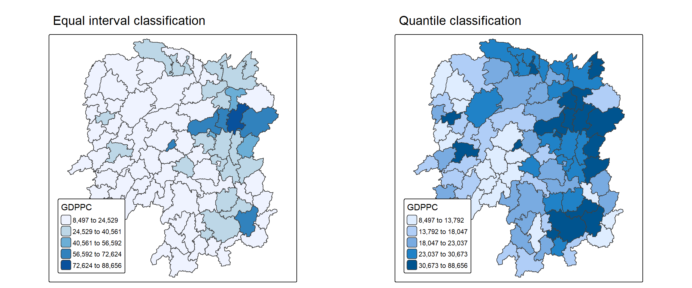
4 Local Indicators of Spatial Association(LISA)
Local Indicators of Spatial Association or LISA evaluates the existence of clusters and/or outliers in the spatial arrangement of a given variable. (eg. GDPPC)
4.1 Computing Contiguity Spatial Weights
In order to compute the local spatial autocorrelation statistics, we need to construct a spatial weights of the study area. The spatial weights is used to define the neighbourhood relationships between the geographical units (i.e. county) in the study area.
This is similar to spatial weights used for global indicators for spatial association.
wm_q <- hunan %>%
mutate(nb = st_contiguity(geometry),
wt = st_weights(
nb, style = "W"),
.before = 1) Summary reveals the neighbour list.
summary(wm_q$nb)Neighbour list object:
Number of regions: 88
Number of nonzero links: 448
Percentage nonzero weights: 5.785124
Average number of links: 5.090909
Link number distribution:
1 2 3 4 5 6 7 8 9 11
2 2 12 16 24 14 11 4 2 1
2 least connected regions:
30 65 with 1 link
1 most connected region:
85 with 11 linksThe summary report above shows that there are 88 area units in Hunan. The most connected area unit has 11 neighbours. There are two area units with only one neighbour.
4.2 Row-standardised weights matrix
Next, we assign weights to each neighbouring polygon. For the below, we will assign equal weight (style=“W”), which will apply a weight of 1/(#ofneighbours) to each neighbouring county, then sum up the weighted income values.
One limitation of this method is that the polygons along the edges of the study area will have values based on fewer polygons, and will potentially over or under estimate the spatial autocorrelation in the data.
Hence, other that this weight (style=“W”), there is also (style=“B”) which uses binary weights where 1 = locations are neighbours while 0 = locations that are not neighbours.
Below are instances of other styles:
| Style Code | Name | Calculation |
|---|---|---|
| B | Binary | 1 if neighbours, 0 if not |
| W | Row-standardised | Weights sum to 1 for each row |
| C | Globally standardised | Total weights sum to 1 |
| U | Uniform | All neighbours get equal weight |
| S | Variance-stabilising | Complex standardisation |
Additionally, if zero.policy = TRUE, weights vectors of zero length are inserted for regions without neighbour in the neighbours list. These will in turn generate lag values of zero, equivalent to the sum of products of the zero row t(rep(0, length=length(neighbours))) %*% x, for arbitrary numerical vector x of length length(neighbours).
4.3 Computing local Moran’s I
To compute local Moran’s I, the local_moran() function of sfdep will be used. It computes Ii values, given a set of zi values and a listw object providing neighbour weighting information for the polygon associated with the zi values.
lisa <- wm_q %>%
mutate(local_moran = local_moran(
GDPPC, nb, wt, nsim = 99),
.before = 1) %>%
unnest(local_moran)local_moran() returns a matrix of values with the following columns: - Ii: the local Moran’s I statistics - E.Ii: the expectation of local moran statistic under the randomisation hypothesis - Var.Ii: the variance of local moran statistic under the randomisation hypothesis - Z.Ii:the standard deviate of local moran statistic - Pr(): the p-value of local moran statistic
glimpse(lisa)Rows: 88
Columns: 21
$ ii <dbl> -1.468468e-03, 2.587817e-02, -1.198765e-02, 1.022468e-03,…
$ eii <dbl> 1.260506e-03, 6.569139e-03, 7.120090e-03, 4.268247e-04, -…
$ var_ii <dbl> 4.847078e-04, 1.068774e-02, 1.197578e-01, 6.050243e-06, 1…
$ z_ii <dbl> -0.12395364, 0.18677449, -0.05521503, 0.24215843, 0.33738…
$ p_ii <dbl> 0.901351983, 0.851837453, 0.955967154, 0.808657401, 0.735…
$ p_ii_sim <dbl> 0.72, 0.92, 0.84, 0.72, 0.60, 0.88, 0.04, 0.04, 0.06, 0.1…
$ p_folded_sim <dbl> 0.36, 0.46, 0.42, 0.36, 0.30, 0.44, 0.02, 0.02, 0.03, 0.0…
$ skewness <dbl> -1.0820936, -0.9966254, 0.8776436, 0.9700330, 0.9924420, …
$ kurtosis <dbl> 0.97647051, 0.68632735, 0.25573103, 0.47703570, 0.4758820…
$ mean <fct> Low-High, Low-Low, High-Low, High-High, High-High, High-L…
$ median <fct> High-High, High-High, High-High, High-High, High-High, Hi…
$ pysal <fct> Low-High, Low-Low, High-Low, High-High, High-High, High-L…
$ nb <nb> <2, 3, 4, 57, 85>, <1, 57, 58, 78, 85>, <1, 4, 5, 85>, <1,…
$ wt <list> <0.2, 0.2, 0.2, 0.2, 0.2>, <0.2, 0.2, 0.2, 0.2, 0.2>, <0…
$ NAME_2 <chr> "Changde", "Changde", "Changde", "Changde", "Changde", "C…
$ ID_3 <int> 21098, 21100, 21101, 21102, 21103, 21104, 21109, 21110, 2…
$ NAME_3 <chr> "Anxiang", "Hanshou", "Jinshi", "Li", "Linli", "Shimen", …
$ ENGTYPE_3 <chr> "County", "County", "County City", "County", "County", "C…
$ County <chr> "Anxiang", "Hanshou", "Jinshi", "Li", "Linli", "Shimen", …
$ GDPPC <dbl> 23667, 20981, 34592, 24473, 25554, 27137, 63118, 62202, 7…
$ geometry <POLYGON [°]> POLYGON ((112.0625 29.75523..., POLYGON ((112.228…4.3.1 Mapping the local Moran’s I values
tm_shape(lisa) +
tm_polygons(fill = "ii",
fill.scale = tm_scale_intervals(
style = "pretty",
n = 5,
values = "brewer.RdBu"),
fill.legend = tm_legend(
title = "Local Morans'I",
position = tm_pos_out())) +
tm_borders(fill_alpha = 0.5) +
tm_title("Loal Morans'I of GDPPC (Queen's method)")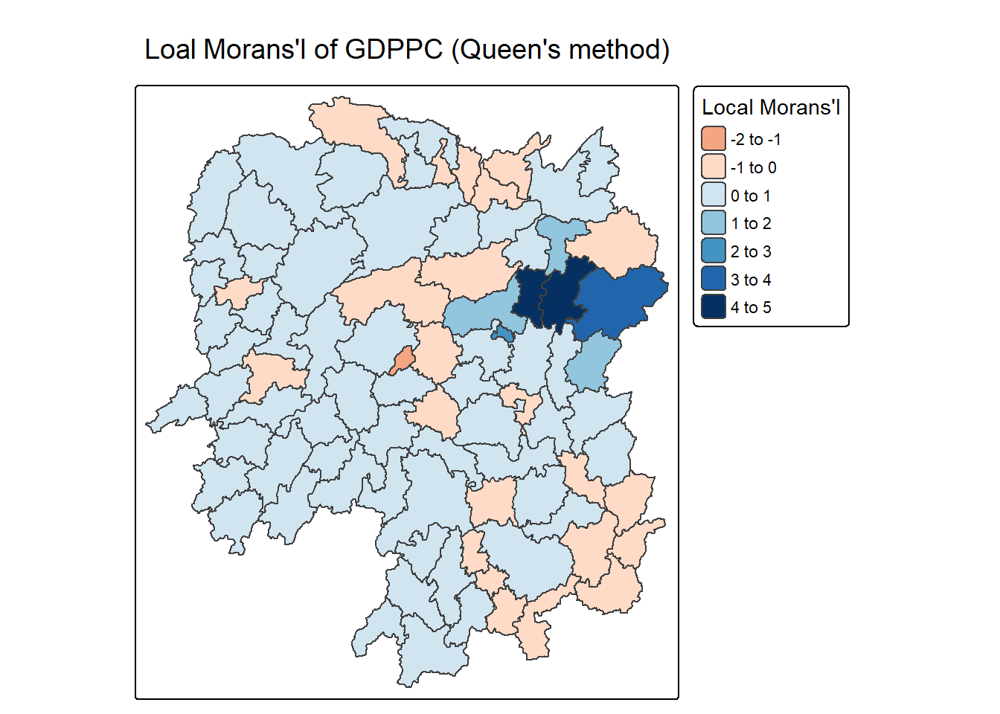
4.3.2 Mapping local Moran’s I p-values
The previous map shows that there are both positive and negative Ii values. However we can plot the p-values to understand the significance of these observations.
tm_shape(lisa) +
tm_polygons(fill = "p_ii",
fill.scale = tm_scale_intervals(
breaks = c(-Inf, 0.001, 0.01, 0.05, 0.1, Inf),
values = "-brewer.Reds"),
fill.legend = tm_legend(
title = "p-value",
position = tm_pos_out())) +
tm_borders(fill_alpha = 0.5) +
tm_title("p-values of Loal Moran's I of GDPPC (Queen's method)")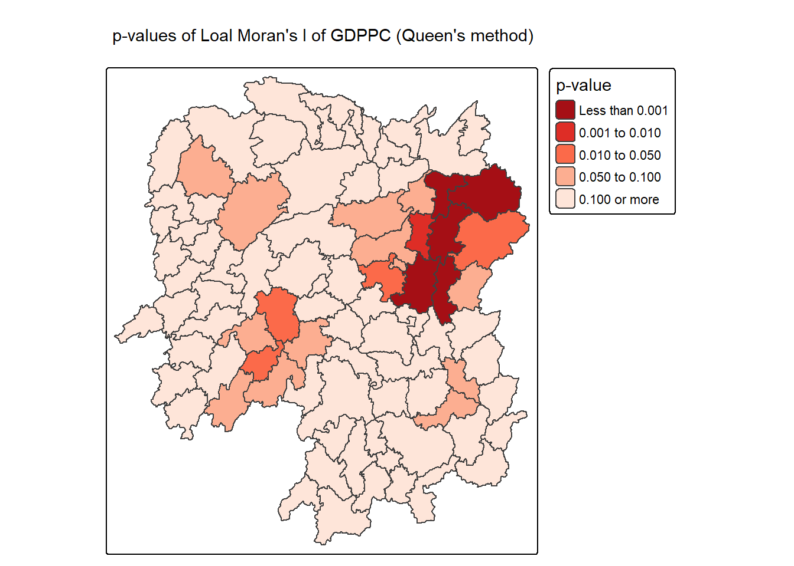
What is observed is that the East cluster and the West cluster Moran’s I values are significant at a 95% confidence level.
4.3.3 Mapping both local Moran’s I values and p-values
ii.map <- tm_shape(lisa) +
tm_polygons(fill = "ii",
fill.scale = tm_scale_intervals(
style = "pretty",
n = 5,
values = "brewer.RdBu"),
fill.legend = tm_legend(
title = "Local Moran's I",
position = tm_pos_in(
"left", "bottom"))) +
tm_borders(fill_alpha = 0.5) +
tm_title("Loal Moran's I of GDPPC (Queen's method)")
p_ii.map <- tm_shape(lisa) +
tm_polygons(fill = "p_ii",
fill.scale = tm_scale_intervals(
breaks = c(-Inf, 0.001, 0.01, 0.05, 0.1, Inf),
values = "-brewer.Reds"),
fill.legend = tm_legend(
title = "p-value",
position = tm_pos_in("left", "bottom")
)) +
tm_borders(fill_alpha = 0.5) +
tm_title("p-values of Loal Moran's I of GDPPC (Queen's method)")
tmap_arrange(ii.map, p_ii.map, asp=1, ncol=2)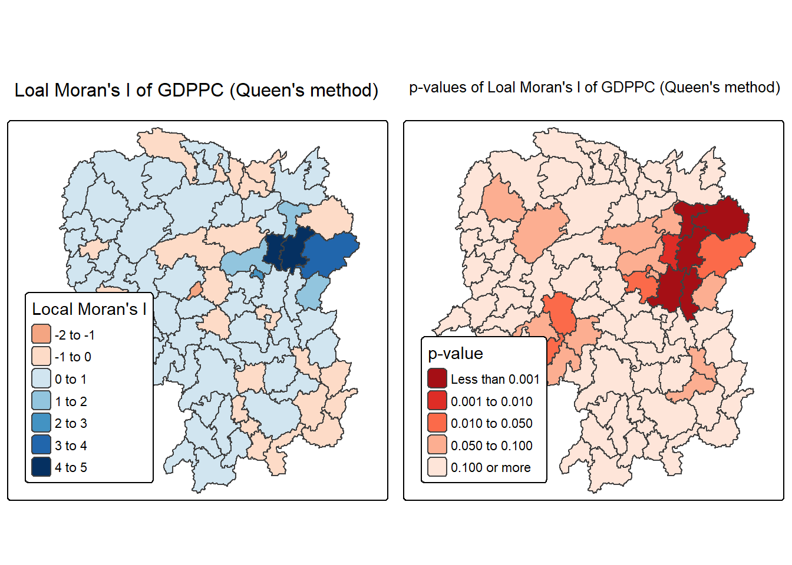
4.4 Preparing and Visualising LISA Map
LISA maps includes choropleth maps showing LISA values, Moran scatterplots which depict local spatial autocorrelation for individual locations, and hot spot analysis maps.
4.4.1 Plotting Moran scatterplot
The Moran scatterplot visualises the relationship between a variable’s values and the average values of its neighboring locations (its spatial lag) to identify spatial autocorrelation.
st_lag() of sfdep package is used to calculates the spatial lag of GDPPC given a neighbor (i.e. nb) and weights list (i.e. wt).
lisa <- lisa %>%
mutate(lag_GDPPC = st_lag(
GDPPC, nb, wt),
.before = 1) %>%
unnest(lag_GDPPC)The Moran Scatterplot of GDPPC is plotted against its spatial lag version
ggplot(data = lisa,
aes(x = GDPPC,
y = lag_GDPPC)) +
geom_point() +
geom_smooth(method = "lm",
se = FALSE,
color = "red") +
labs(x = "GDPPC",
y = "Spatial Lag of GDPPC",
title = "Moran Scatterplot") +
theme_minimal()
To support effective visual communication, we can create a visual quadrant.
High-high refers to areas with high GDPPC and are surrounded by other areas that have the average level of GDPPC.
ggplot(data = lisa,
aes(x = GDPPC,
y = lag_GDPPC,
color = mean)) +
geom_point(size = 2) +
geom_smooth(method = "lm",
se = FALSE,
color = "black") +
geom_hline(yintercept=mean(lisa$lag_GDPPC), lty=2) +
geom_vline(xintercept=mean(lisa$GDPPC), lty=2) +
scale_color_manual(
values = c("High-High" = "red",
"Low-Low" = "blue",
"Low-High" = "lightblue",
"High-Low" = "pink")) +
labs(x = "GDPPC",
y = "Spatial Lag of GDPPC",
title = "Moran Scatterplot with LISA Quadrants") +
theme_minimal()
4.4.2 Plotting Moran scatterplot with standardised variable
scale() is used to center and scale the variable. Centering is implemented by subtracting the mean (omitting NAs), and scaling is done by dividing the (centered) variable by their standard deviations.
The as.vector() added to the end is to make sure that the data type we get out of this is a vector, that map neatly into out dataframe.
ggplot(data = lisa,
aes(x = z_GDPPC,
y = z_lag_GDPPC,
color = mean)) +
geom_point(size = 2) +
geom_smooth(method = "lm",
se = FALSE,
color = "black") +
geom_hline(yintercept=mean(lisa$z_lag_GDPPC), lty=2) +
geom_vline(xintercept=mean(lisa$z_GDPPC), lty=2) +
scale_color_manual(
values = c("High-High" = "red",
"Low-Low" = "blue",
"Low-High" = "lightblue",
"High-Low" = "pink")) +
labs(x = "Standardised GDPPC",
y = "Standardised Spatial Lag of GDPPC",
title = "Standardised Moran Scatterplot with LISA Quadrants") +
theme_minimal()
4.4.3 Preparing LISA map classes
We will set a statistical significance level for the local Moran.
signif <- 0.05 4.4.4 Plotting and visualising LISA map
By default, the LISA classes are stored in mean, median and pysal fields of lisa sf data frame. To prepare the LISA map, we will derive a new field called LISA-cluster from either one of these three fields.
A new class ‘insignificant’ has been added for records where p_ii > 0.05
lisa <- lisa %>%
mutate(
LISA_cluster = ifelse(
p_ii < 0.05,
as.character(mean),
"Insignificant"),
LISA_cluster = factor(
LISA_cluster,
levels = c("Insignificant", "Low-Low", "Low-High", "High-Low", "High-High")
)
)lisa_map <- tm_shape(lisa) +
tm_polygons(
fill = "LISA_cluster",
fill.scale = tm_scale_categorical(
values = c(
"grey80", # Insignificant
"blue", # Low-Low
"lightblue", # Low-High
"pink", # High-Low
"red" # High-High
)
),
fill.legend = tm_legend(
title = "LISA Cluster",
position = tm_pos_in("left", "bottom"))
) +
tm_borders() +
tm_title("Local Moran's I Clusters (p < 0.05)")
lisa_map
We can also include the local Moran’s I map and p-value map as shown below for easy comparison.
ii.map <- tm_shape(lisa) +
tm_polygons(fill = "ii",
fill.scale = tm_scale_intervals(
style = "pretty",
n = 5,
values = "brewer.RdBu"),
fill.legend = tm_legend(
title = "Local Moran's I",
position = tm_pos_in(
"left", "bottom"))) +
tm_borders(fill_alpha = 0.5) +
tm_title("Loal Moran's I of GDPPC (Queen's method)")
lisa_map <- tm_shape(lisa) +
tm_polygons(
fill = "LISA_cluster",
fill.scale = tm_scale_categorical(
values = c(
"grey80", # Insignificant
"blue", # Low-Low
"lightblue", # Low-High
"pink", # High-Low
"red" # High-High
)
),
fill.legend = tm_legend(
title = "LISA Cluster",
position = tm_pos_in("left", "bottom"))
) +
tm_borders() +
tm_title("Local Moran's I Clusters (p < 0.05)")
lisa_map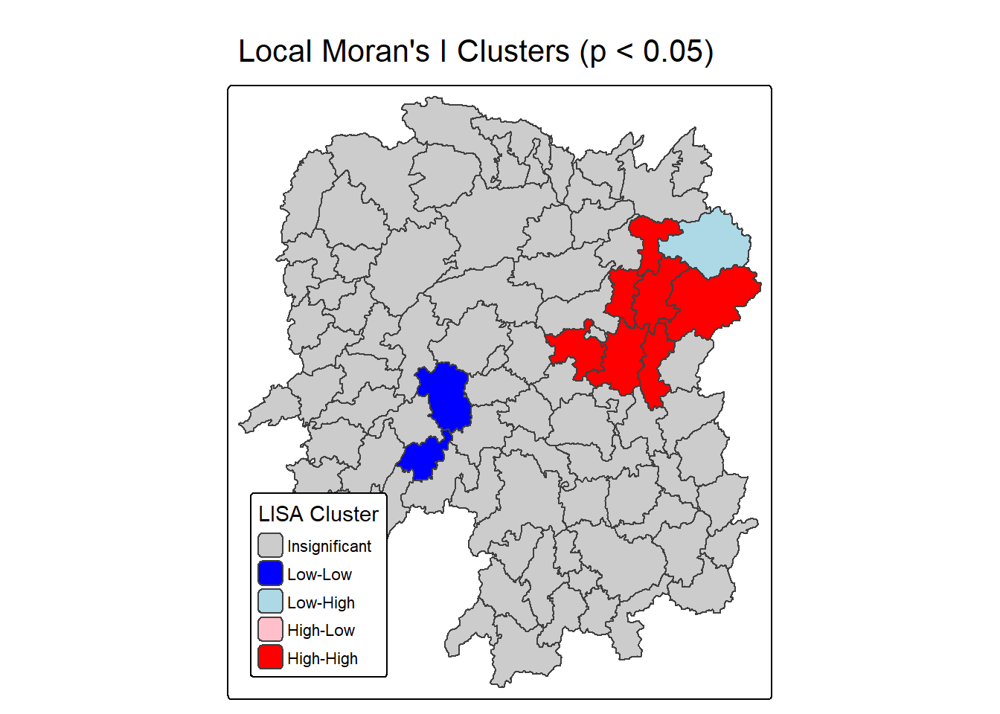
tmap_arrange(ii.map, lisa_map, asp=1, ncol=2)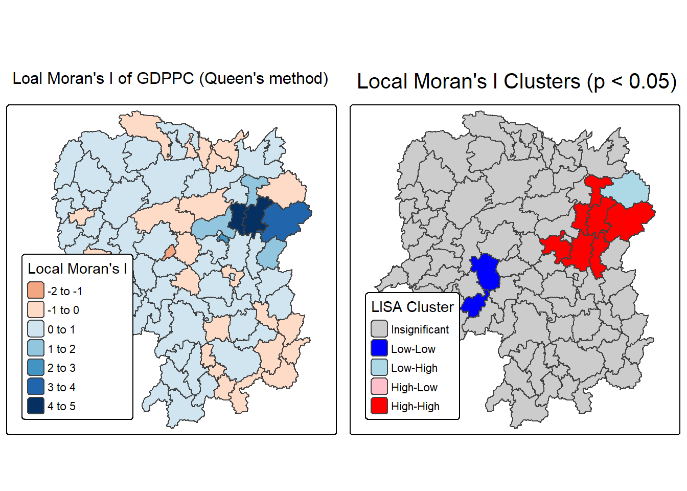
We can conclude that high-high cluster has high local Moran’s I value, while low-low cluster has local Moran’s I value of close to 0.
5 Hot Spots and Cold Spots Analysis (HCSA)
Hot spots and cold spots analysis is a technique used in spatial statistics to identify statistically significant clusters of high values (hot spots) and low values (cold spots) of a geographically referenced attribute (i.e. GDPPC). These analyses help visualise and understand spatial patterns, revealing areas where data points are clustered more densely than would be expected by random chance.
HCSA uses statistical methods, like the Getis-Ord Gi* statistic, to determine if the observed clustering is statistically significant or could have occurred randomly.
The analysis consists of four steps:
- Deriving spatial weight matrix
- Computing Gi* statistics
- Mapping Gi* statistics
- Communicating the analysis results
5.1 Deriving distance weight matrix
Whist the spatial autocorrelation considered units which shared borders, for Getis-Ord Gi* statistics, we are defining neighbours based on distance.
There are two type of distance-based proximity matrix, they are:
- fixed distance weight matrix,
- adaptive distance weight matrix, and
- inverse distance weights.
5.1.1 Computing fixed distance weights
We compute fixed distance weight matrix by using st_dist_band() and st_weights() of the sfdep package.
First, we determine the upper limit for the distance band by looking at the critical threshold.
ct <- critical_threshold(st_geometry(hunan))
ct[1] 62.82614The summary report shows that the largest first nearest neighbour distance is 60.80 km, so using this as the upper threshold gives certainty that all units will have at least one neighbour.
Using this critical threshold value, we can compute the fixed distance weight.
Note that for Gi* include_self() must be used to ensure that \(w_{ii}(d) \neq 0\).
hunan_fdw <- hunan %>%
mutate(nb = include_self(
st_dist_band(
st_geometry(geometry),
upper = ct)),
wt = st_weights(nb,
style = "W"),
.before = 1) 5.1.2 Computing adaptive distance weights
Fixed distance weight matrix tends to have more densely settled areas (usually the urban areas) having more neighbours and the less densely settled areas (usually the rural counties) having lesser neighbours. Having many neighbours smooth the neighbour relationship across more neighbours.
Adaptive distance weight matrix controls the numbers of neighbours directly using k-nearest neighbours, either accepting asymmetric neighbours or imposing symmetry.
hunan_adw <- hunan %>%
mutate(nb = include_self(
st_knn(
st_geometry(geometry),
k = 6)),
wt = st_weights(
nb, style = "W"),
.before = 1)5.2 Computing local Gi*
Local Gi* (pronounced “G-i-star”) is a Getis-Ord statistic used in spatial analysis to identify statistically significant hot spots and cold spots of high or low attribute values within a dataset. It measures the spatial clustering of values by comparing the total value within a specified neighborhood to the global total, producing a Z-score and p-value for each location to determine the likelihood that the observed pattern is not due to random chance.
HCSA_fdw <- hunan_fdw %>%
mutate(
gistar = local_gstar_perm(
GDPPC, nb, wt, nsim = 99),
.before = 1) %>%
unnest(gistar)5.3 Preparing and Visualising HCSA Map
5.3.1 Mapping Gi* with fix distance weights
Thematic mapping functions of tmaps are used to prepare a choropleth map showing the distribution of Gi* values.
tm_shape(HCSA_fdw) +
tm_polygons(fill = "gi_star",
fill.scale = tm_scale_intervals(
style = "pretty",
n = 6,
values = "brewer.rd_bu"),
fill.legend = tm_legend(
title = "Gi*",
position = tm_pos_out())) +
tm_borders(fill_alpha = 0.5) +
tm_title("Gi* of GDPPC (Fixed Bandwidth d = 60799.91m)")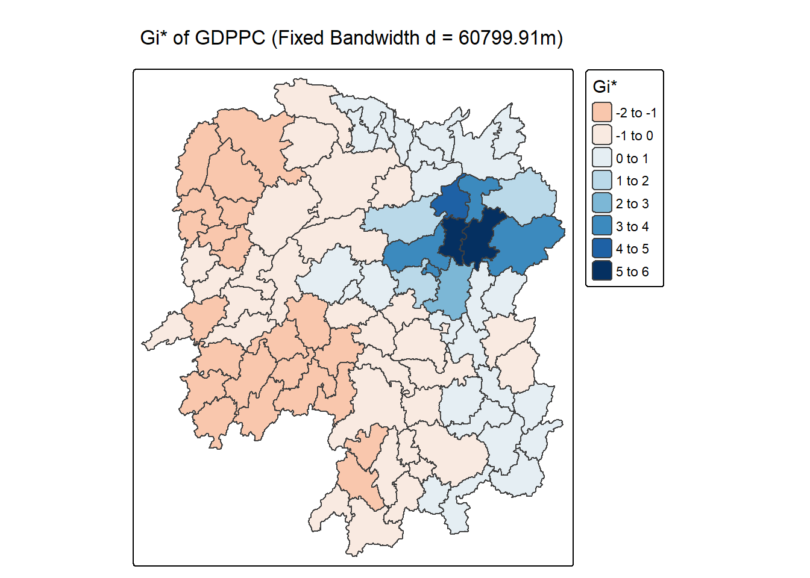
5.3.2 Mapping local Gi* p-values
The choropleth shows there is evidence for both positive and negative Ii values. However, it is useful to consider the p-values for each of these values.
tm_shape(HCSA_fdw) +
tm_polygons(fill = "p_sim",
fill.scale = tm_scale_intervals(
breaks = c(-Inf, 0.001, 0.01, 0.05, 0.1, Inf),
values = "-brewer.Reds"),
fill.legend = tm_legend(
title = "simulated p-value",
position = tm_pos_out())) +
tm_borders(fill_alpha = 0.5) +
tm_title("p-values of local Gi* of GDPPC (Fixed distance)")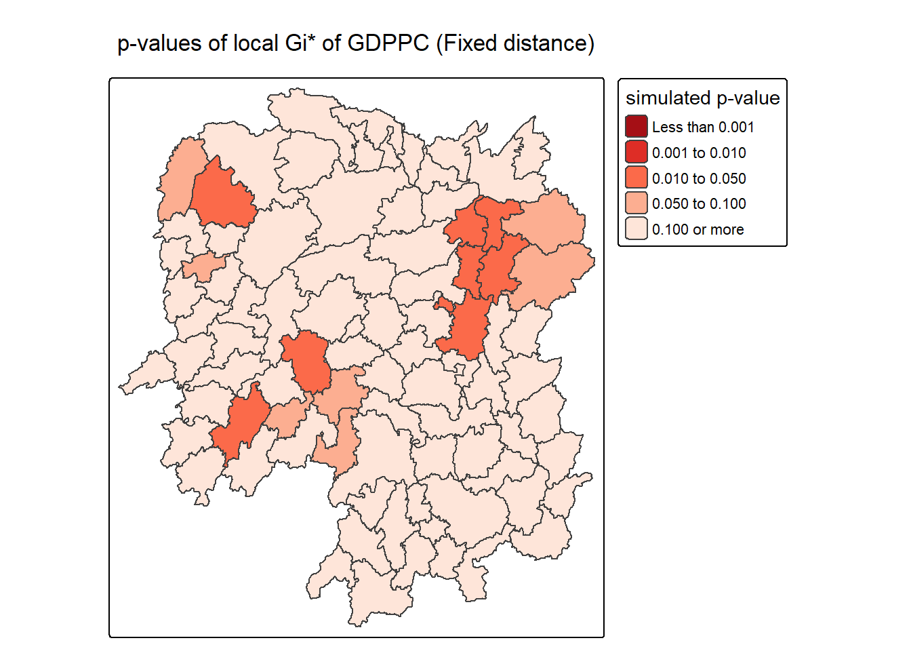
5.3.3 Mapping both Gi* values and p-values
Gi* values map and p-values map are plotted next to each other for easier interpretation.
Gi_star_map <- tm_shape(HCSA_fdw) +
tm_polygons(fill = "gi_star",
fill.scale = tm_scale_intervals(
style = "pretty",
n = 5,
values = "-brewer.rd_bu"),
fill.legend = tm_legend(
title = "local Gi*",
position = tm_pos_in(
"left", "bottom"))) +
tm_borders(fill_alpha = 0.5) +
tm_title("Local Gi* of GDPPC")
p_values_map <- tm_shape(HCSA_fdw) +
tm_polygons(fill = "p_sim",
fill.scale = tm_scale_intervals(
breaks = c(0, 0.001, 0.01, 0.05, 0.1, 1),
values = "-brewer.reds"),
fill.legend = tm_legend(
title = "p-value",
position = tm_pos_in("left", "bottom")
)) +
tm_borders(fill_alpha = 0.5) +
tm_title("p-values of local Gi* of GDPPC (fixed distance)")
tmap_arrange(Gi_star_map, p_values_map, asp=1, ncol=2)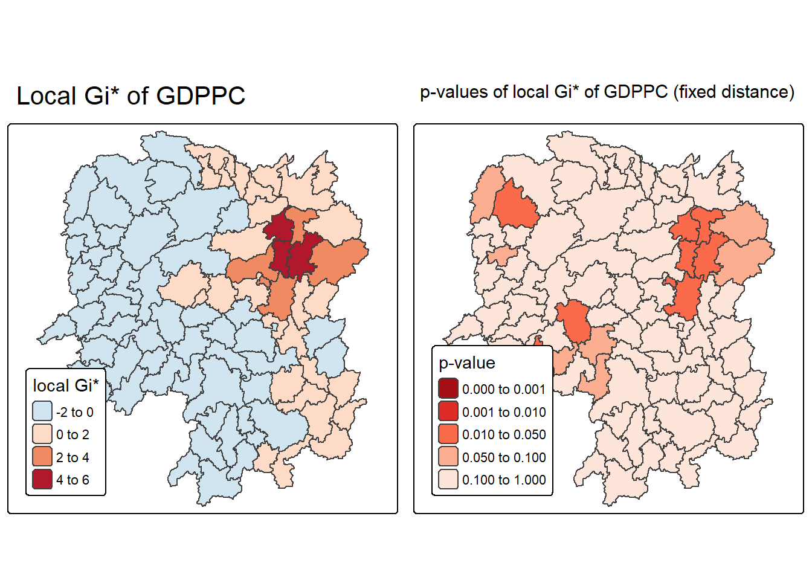
5.3.4 Plotting and visualising HCSA Map
By default, the HCSA classes are stored in cluster field of HCSA_fdw sf data frame. To prepare the HSCA map, we will derive a new field called HCSA_cluster from cluster field.
A new class called Insignificant has been added for records whereby p_sim > 0.05.
HCSA_fdw <- HCSA_fdw %>%
mutate(HCSA_cluster = case_when(
p_sim > 0.05 ~ "Insignificant",
p_sim <= 0.05 & cluster == "High" ~ "Hot spot",
p_sim <= 0.05 & cluster == "Low" ~ "Cold spot",
TRUE ~ "Other"),
HCSA_cluster = factor(
HCSA_cluster,
levels = c("Insignificant", "Hot spot", "Cold spot")
),
.before = 1
)HCSA_map <- tm_shape(HCSA_fdw) +
tm_polygons(
fill = "HCSA_cluster",
fill.scale = tm_scale_categorical(
values = c(
"grey80", # Insignificant
"red", # Low-Low
"blue" # High-High
)
),
fill.legend = tm_legend(
title = "HSCA Cluster",
position = tm_pos_in("left", "bottom"))
) +
tm_borders() +
tm_title("HCSA Clusters (p < 0.05)")
HCSA_map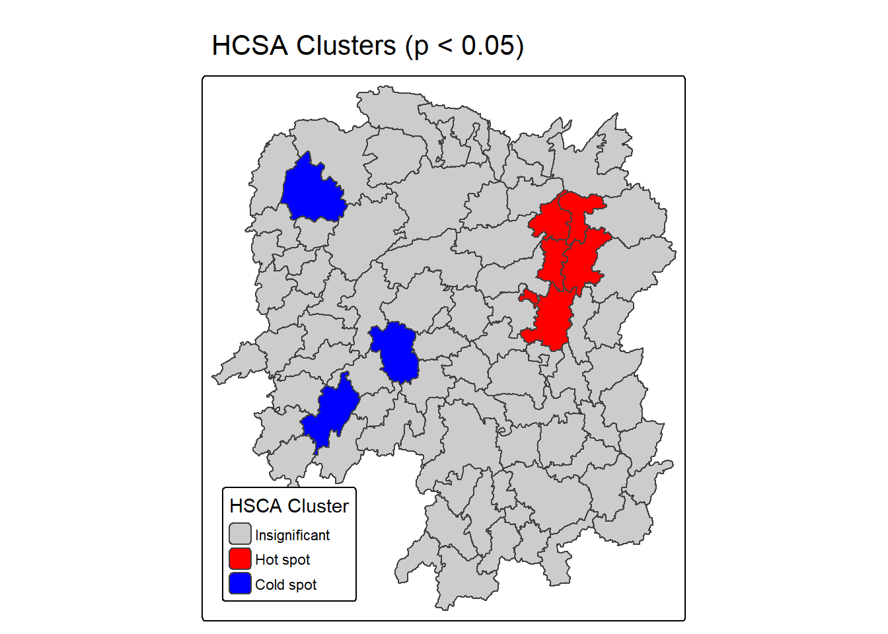
The local Gi* values map and the HCSA map can be plotted next to each other.
tmap_arrange(Gi_star_map, HCSA_map, asp=1, ncol=2)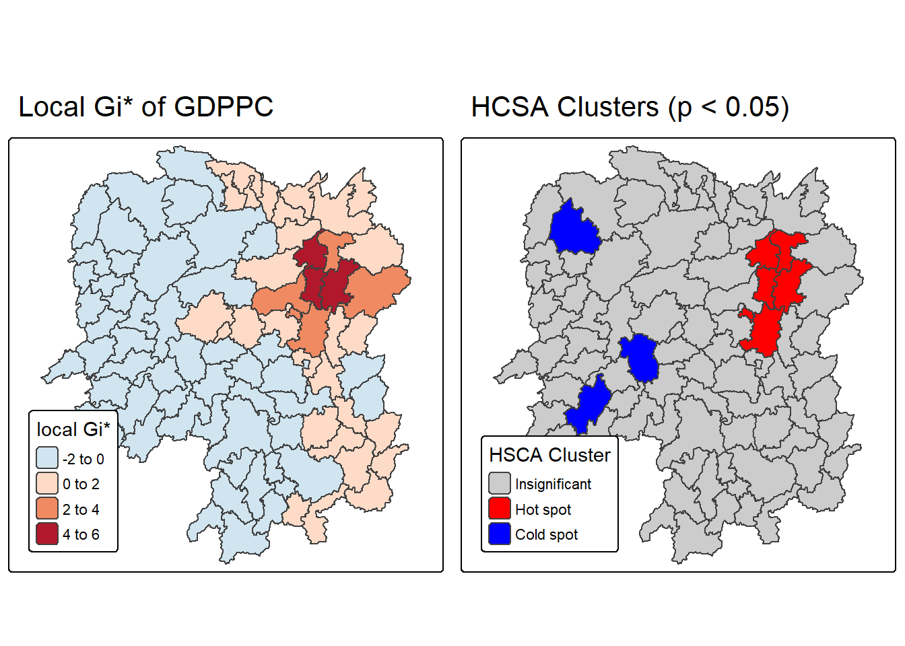
We can observe that there is a large hotspot in the East, while a smaller hotspot in the West. However the smaller hotspot has lower Gi* values as it is more localised (no neighbours share high GDPPC).
We can also observe that there are two cold spots in the West and Central areas, but both have lower Gi* values as they are more localised.